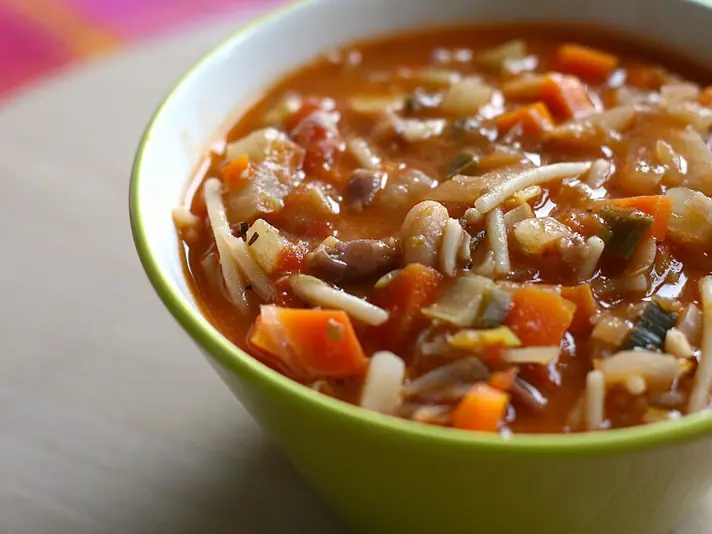

Фото: Katrin Morenz from Aachen, Deutschland, CC BY-SA 2.0

Минестроне
Густой итальянский суп с фасолью, овощами и мелкой пастой
50 мин6 порц.235 ккал на порциюБ 8 · Ж 6 · У 37Итальянская кухня
Продукты на 6 порц.
- Картофель2 шт
- Морковь1 шт
- Лук репчатый1 шт
- Сельдерей1 стебель
- Кабачок1 шт
- Томаты в собственном соку1 банка
- Фасоль консервированная1 банка
- Макароны80 г
- Чеснок2 зуб.
- Вода2000 мл
- Оливковое масло2 ст. л.
- Соль2 ч. л.
- Перец чёрный молотый1 щеп.
- Базилик по желанию10 г
- Пармезан по желанию30 г
Как готовить
- Картофель, морковь, лук, сельдерей и кабачок нарежьте одинаковым кубиком 1 см, чеснок мелко.
- Вскипятите воду, опустите картофель, морковь, лук, сельдерей и чеснок, варите на среднем огне 15 минут.
- Добавьте кабачок и томаты, размяв их ложкой, варите ещё 10 минут.
- Фасоль слейте, промойте и положите в суп вместе с мелкой пастой. Варите 8-10 минут, пока паста не станет мягкой.
- Посолите, поперчите, влейте оливковое масло и снимите с огня.
- Подавайте с листьями базилика и тёртым пармезаном.
Совет. Без пармезана суп подходит для поста. На второй день паста разбухает, подлейте кипятка при разогреве.